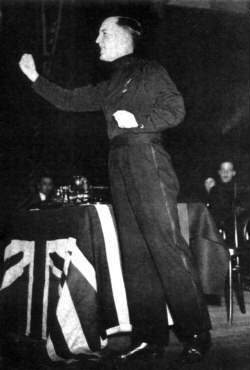

|
Lord Haw-Haw William Joyce was a German citizen (formerly an American) who had been a radio propagandist for the Reich. His nightly broadcasts from Berlin had made him infamous in England. In 1946 Joyce was executed by the British for acts of high treason committed against the Crown, despite the fact that he had never once been a British subject. Not even for one day.William Joyce was born in Brooklyn, NY. At the age of three, his family moved to Ireland. They remained there until Joyce turned 17, when they moved to London. Although he and his family claimed several times on various government forms that William was a "British subject by birth," this was not the case. Nor did he ever become a naturalized citizen. The boy was an American living abroad, pure and simple. When he went to college, Joyce joined up with the fascist movement. He became a member of British Fascisti Limited, a group which lionized and emulated Mussolini. Later Joyce left the group and secured a paid position in the British Union of Fascists, eventually becoming its Director of Propaganda. The BUF had Adolf Hitler as their hero. In August 1939, Joyce learns that MI5 was getting ready to place him into custody for an indefinite length of time, to quell his agitating. Joyce did the sensible thing and secretly escaped to Germany with his wife. Only three weeks later, Joyce was doing radio broadcasts for the Propaganda Ministry of Joseph Goebbels. There Joyce inherited the title "Lord Haw-Haw" from the traitorous Englishmen who had been doing the broadcast before him. The radio show consisted of Joyce reading propaganda into a microphone. The scripts were contrived to generate in the listening British fear and mistrust of their government. Much of the content was laughably stupid, but every once in a while he managed to creep out his audience. In 1940 Joyce wrote a volume, titled Twilight Over England: The Path to Democracy is the Road to Oblivion. The book was conceived as an appeal to the ordinary British man or woman fed up with the war. OK, so the title isn't exactly inspiring. But Joyce made up for it by going on at length about England's failed monetary policies and how Jews run the country:
Thus, a typically Jewish greed not only kept the coal-fields idle and the miners unemployed but left England gravely unprepared for the war that Jews themselves were continually urging her to wage against Germany.Pretty convincing stuff. Undoubtedly it would have induced many readers to switch sides, but the Propaganda Ministry decided not to circulate Twilight Over England outside of Germany, so it was mainly used to convert British POWs. But the British really hated Joyce. By using the airwaves, it enabled the Germans to transmit propaganda directly into the living rooms of the British populace. This was a significant innovation in psychological warfare. And, according to an internal report of the British government, the broadcasts had a real effect:
The effect of Haw-Haw is considered in this region (Bristol) to be extremely insidious, and this danger is underestimated by the BBC and the Government, who do not fully appreciate to what extent this propaganda is believed. And the Germans knew it. Josef Goebbels wrote: "Our English radio broadcasts are being taken with deadly seriousness in England. Lord Haw-Haw's name is on everybody's lips. We do not react, but intensify our broadcast." On May 28, 1945 Joyce was captured in a German forest by two British officers gathering a truckload of firewood. Near Flensburg on the Danish border, Capt. Alexander Adrian Lickorish of the Reconnaissance Regiment, and Lt. Perry came upon an odd, tramplike figure with a walking stick. The tramp pointed to some logs with his walking stick, and addressed the men in French. Then he said in English, "oh, there are three or four more here." The duo immediately recognized the voice of Lord Haw-Haw. Perry engaged the man in conversation for a few minutes "about coniferous and deciduous trees," after which Perry became certain it was Joyce. Joyce had kept his left hand in his pocket the entire time. When Joyce picked up a log with both hands, Perry asked him "you wouldn't be William Joyce by any chance, would you?" Joyce's hand fell back into his pocket. Perry drew his gun and shot him in the leg. Joyce was carrying two passports, one of them in his own name, and another under the pseudonym Wilhelm Hansen. Joyce was taken back to London on a stretcher, where he stood trial for high treason. Nobody denied that he had made the radio broadcasts. The only issue was whether Britain had any jurisdiction. By now, Joyce had become a German citizen. Before that, he had been an American. But the prosecution argued that during the period that Joyce held a valid British passport, he had a reciprocal duty to Great Britain. It's a ridiculous argument today, and it was equally ridiculous then. But the British were determined to rid the world of Lord Haw-Haw, so their courts upheld the legal farce. And that's how the Limeys hanged a Kraut for treason.
Timeline
|